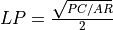
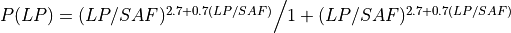

Target Recognition Commands¶
average_aspect_ratio ... detection_scene_analysis_factor ... classification_scene_analysis_factor ... identification_scene_analysis_factor ... minimum_detection_pixel_count ... minimum_classification_pixel_count ... minimum_identification_pixel_count ... detection_delay_time ... classification_delay_time ... identification_delay_time ... transition_coast_time ... detection_coast_time ... classification_coast_time ... identification_coast_time ...
Overview¶
Target recognition is enabled in WSF_IMAGE_PROCESSOR when the target_recognition flag is set to true. In this mode, the processor attempts to detect, classify, and/or identify all ‘objects’ (platforms) in the currently evaluated image. These decisions are based on the number of pixels an object’s platform occupies, using the following Johnson’s Criteria equations:
- An object is declared DETECTED when the following criteria are met:
The object occupies the number of pixels specified in minimum_detection_pixel_count.
The object passes the Johnson criteria for ‘detection’.
The object has met these two criteria for the minimum time specified by detection_delay_time.
- An object is declared CLASSIFIED when the following criteria are met:
The object has passed the DETECTED state.
The object occupies the minimum number of pixels specified by minimum_classification_pixel_count.
The object passes the Johnson criteria for ‘classification’.
The object has met the latter two criteria for the minimum time specified by classification_delay_time.
- An object is declared IDENTIFIED when the following criteria are met:
The object has passed the CLASSIFIED state.
The object occupies the minimum number of pixels specified by minimum_identification_pixel_count.
The object passes the Johnson criteria for ‘identification’.
The object has met the latter two criteria for at least the time specified by identification_delay_time.
When an object is declared DETECTED, a track is emitted over the internal link(s) that represents the object. The track will continue to be updated and emitted as long as updates are received from the imaging sensor. The following additional information is included in the track to indicate the current state:
State |
AuxDataDouble(“CLASSIFIED”) |
AuxDataDouble(“IDENTIFIED”) |
Type() |
|---|---|---|---|
DETECTED |
-1 |
-1 |
“UNKNOWN” |
CLASSIFIED |
<time> |
-1 |
<platform-type> |
IDENTIFIED |
<time> |
<time> |
<platform-type> |
The aux_data variables CLASSIFIED and IDENTIFIED represent the most recent time the object was categorized in that state, with a value of -1 representing ‘not in that state’.
Note
In the current implementation, once an object reaches a given state, it will never be reset to a lower state. It is the user’s responsibility to check the data and determine if the information is usable.
Commands¶
- average_aspect_ratio <real-reference>¶
Defines the average aspect ratio used when converting the raw pixel count from the pseudo-image into a number of line pairs. If AR is the average aspect ratio defined by this command, and PC is the raw pixel count from an object in the pseudo-image, the number of line pairs LP is defined to be: : 
Default 4.0
- detection_scene_analysis_factor <real-reference>¶
- classification_scene_analysis_factor <real-reference>¶
- identification_scene_analysis_factor <real-reference>¶
Defines the ‘scene analysis factor’ (SAF) in the Johnson criteria equation for detection, classification, or identification, respectively. The equation is:

Where LP is the number of line pairs and SAF is the appropriate scene analysis function.
Defaults detection: 1.0, classification: 4.0, identification: 6.4
- minimum_detection_pixel_count <real-reference>¶
- minimum_classification_pixel_count <real-reference>¶
- minimum_identification_pixel_count <real-reference>¶
Defines the minimum number of pixels an object must occupy in an image before it can possibly be detected, classified, or identified, respectively. An object must pass the pixel count test and Johnson criteria test for a given state.
Default 0
- detection_delay_time <time-reference>¶
Defines the amount of time in which an object must meet the ‘detection’ criteria until it is declared as DETECTED. During the delay time, detections that do not meet the ‘detection’ criteria will result in the state being reset back to UNDETECTED unless the transition_coast_time is defined.
Default 0 seconds
- classification_delay_time <time-reference>¶
Defines the amount of time in which an object must meet the ‘classification’ criteria until it is declared as CLASSIFIED. During the delay time, detections that do not meet the ‘classification’ criteria will result in the state being reset back to DETECTED or UNDETECTED (depending on the quality of the failed detections) unless the transition_coast_time is defined.
Default 0 seconds
- identification_delay_time <time-reference>¶
Defines the amount of time in which an object must meet the ‘identification’ criteria until it is declared as IDENTIFIED. During the delay time, detections that do not meet the ‘identification’ criteria will result in the state being reset back to CLASSIFIED, DETECTED, or UNDETECTED (depending on the quality of the failed detections) unless the transition_coast_time is defined.
Default 0 seconds
- transition_coast_time <time-reference>¶
Defines the amount of time the object can ‘coast’ without receiving an ‘acceptable detection’ while in a transition period between states (as defined by detection_delay_time, classification_delay_time, and identification_delay_time). An ‘acceptable detection’ is one that at least meets the detection criteria for the destination state.
Default 0 seconds
- detection_coast_time <time-reference>¶
- classification_coast_time <time-reference>¶
- identification_coast_time <time-reference>¶
Defines the amount of time an object can remain in a state without receiving a detection that does not meet the Johnson criteria for that state.
Default 0 seconds
Note
This is currently an investigative capability and does not affect the produced track.